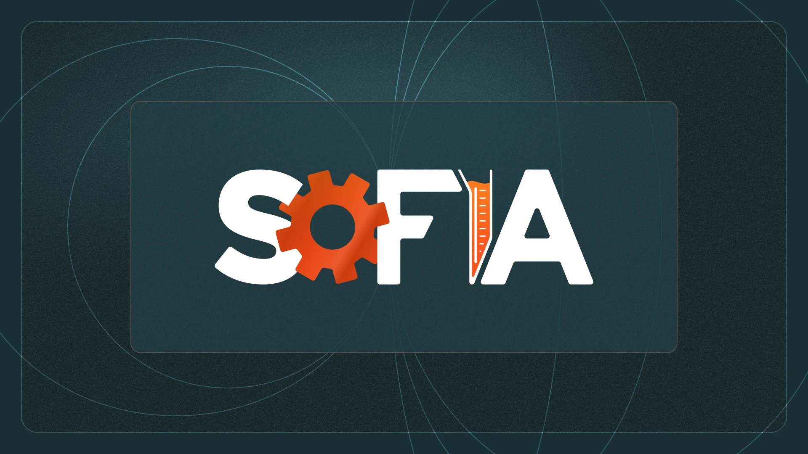
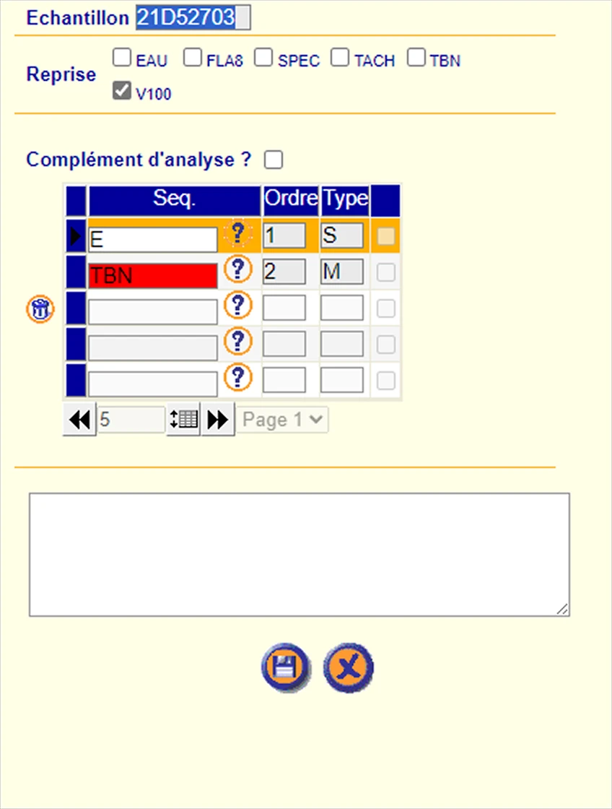
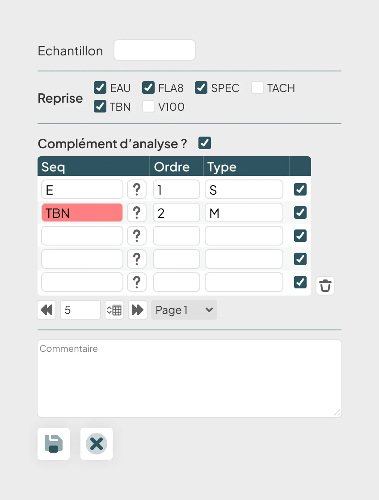
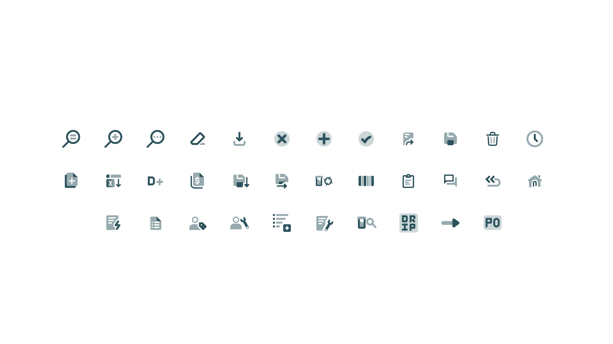
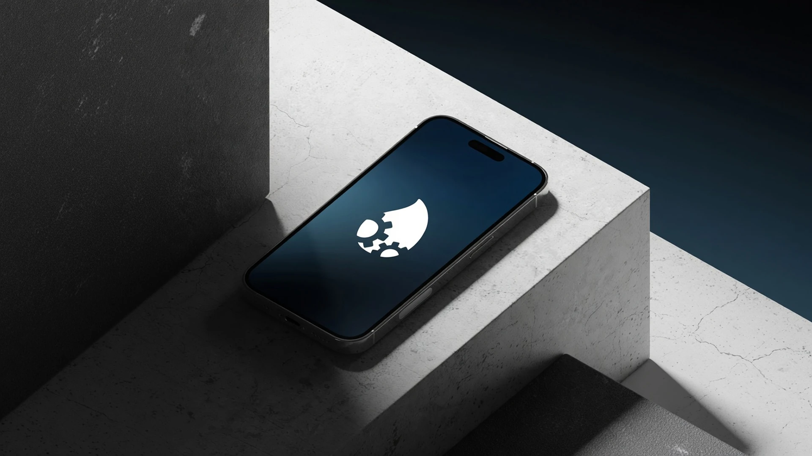

Design is empathy in motion.
[ Sector: Enterprise Software ]
97,000 people used this software every day. Nobody had asked them what they actually needed.

97k
Users worldwide
40+
Countries
17+
Languages supported
2M+
Samples processed / year
01 — Context
SOFIA — Solutions for Oil and Fluid Information Applications — is SGS's global enterprise platform for Oil Condition Monitoring. Maintenance engineers, fleet managers, and industrial operators use it to track the health of machinery oils, greases, and fluids across transportation, wind energy, mining, and marine industries.
When a sample comes back abnormal, SOFIA tells you before a turbine fails or an engine seizes. SGS processes over 2 million oil samples a year through the platform, with results available 24/7 across a web dashboard and mobile app.
SGS is the world's leading Testing, Inspection and Certification company — one of the most trusted names in industrial quality assurance globally. Sofia is one of their central operational tools.
02 — Challenge
When I joined SGS as a design apprentice in 2023, Sofia worked — technically. But it had grown faster than its design had. Years of incremental development had left it with inconsistent visual patterns, fragmented navigation logic, no component system, and an interface that had never been intentionally designed for the scale it had reached.
97,000 users. 17+ languages. Industries ranging from wind turbine maintenance to marine fleet management. And a design that had never had a dedicated designer behind it.
The brief wasn't "make it look nicer." It was: audit everything, understand what's broken, fix it, and ship it globally.


03 — Process
I started with a full UX audit — mapping every screen, every user flow, every friction point. Not to catalogue problems, but to understand the system before touching it. In enterprise software at this scale, an uninformed change creates three new problems for every one it fixes.
From the audit came a complete rework of the information architecture: navigation restructured around actual user tasks rather than internal data models. Then a component library built from scratch — the first time Sofia had one.
Every screen was redesigned in high fidelity before being handed to development. No handoff gaps, because there was only one designer — I was present through implementation, QA, and the global rollout.

04 — Deliverables
UX Research & Audit — Mapped the entire existing platform, identified structural and usability failures, and presented findings to stakeholders before a single pixel changed.
Information Architecture — Rebuilt the navigation and page hierarchy from scratch, prioritising the workflows that 97,000 users actually perform every day.
Component Library — Designed and documented Sofia's first ever shared component system: a reusable set of UI elements built for consistency at scale and long-term maintainability.
UI Design — Full high-fidelity redesign across the entire platform, from dashboard to report detail views, in all supported screen sizes.
Design QA — Stayed involved through implementation to catch regressions and ensure the delivered product matched the design intent.

"The redesigned Sofia shipped to a global rollout without a single major regression in user feedback. For a platform at that scale, that's not a given."
05 — Outcome
The redesigned platform went live across SGS's global network without a significant regression in user feedback — a meaningful benchmark for an enterprise tool at this scale, used daily by nearly 100,000 people with no tolerance for downtime or confusion.
The component library built during the project is now the design foundation for ongoing Sofia development. The information architecture rebuilt from scratch became the navigation structure shipped in the final product.
Two years. One designer. Every screen.